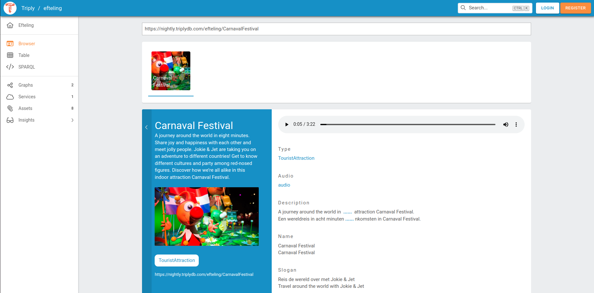

Viewing Data¶
TriplyDB offers several ways to explore your datasets.
Linked Data Browser¶
The linked data browser offers to traverse the data by focusing on one node at the time. The node is describe using it's properties, which can be followed to other nodes in the graph.
The following properties provide additional information about your linked data, enabling the LD-browser to display visualizations and provide a better user experience.
Types¶
The predicate rdf:type allows you to specify the type or class of a resource in your linked data:
By using rdf:type, you can indicate the category or classification of the resource, which can help the LD-browser understand the nature of the data and display it appropriately.
In the example below, you can see that "Iris setosa" is the type of flowering plant due to the usage of the rdf:type property.
Labels¶
Labels are typically used to provide a concise and meaningful title or display name for a resource, making it easier for users to understand the content of your linked data. These predicates allow you to provide human-readable labels or names for your resources:
- The property
rdfs:label - The property
skos:prefLabel
In the example below, the rdfs:label property was used to denote the label(name) of the Pokemon, resulting in the display of "Pikachu" above its corresponding image.
Descriptions¶
Descriptions can provide additional context or information about a resource, helping users understand its purpose, content, or significance. These predicates allow you to provide textual descriptions or comments about your resources:
- The property
sdo:description - The property
rdfs:comment
In the following example rdfs:comment was used to provide additional information on Iris Setosa.
Geo¶
These are some of the predicates used for representing geographic information in your LD-browser:
- The property
geo:asWKT: This property allows you to specify the geometries of geographic features using the Well-Known Text (WKT) format, which can be visualized on a map in the LD-browser. - The property
geo:hasGeometry: This property is used to link a geographic feature with its corresponding geometry. - The property
geo:location: This property is used to indicate the location of a resource using geographic coordinates, such as latitude and longitude, in your linked data.
In the following example geo:hasGeometry property was used to showcase a map depicting the location of Instituut voor Beeld en Geluid.
Images¶
These predicates allow you to associate images or visual representations with your resources:
- Class
sdo:ImageObject - The property
foaf:depiction - The property
foaf:thumbnail - The property
foaf:img - The property
sdo:image - The property
sdo:contentUrl
By using these predicates, you can provide URLs or references to images that can be displayed alongside your linked data in the LD-browser.
In the example below, foaf:depiction was used to display picture of Pikachu in the LD-browser:
Audio¶
These predicates allow you to associate audio content with your resources:
- The class
sdo:AudioObject - The property
sdo:audio - The property
sdo:contentUrl
You can use these predicates to provide URLs or references to audio files that can be played or streamed within the LD-browser.
In the following example, sdo:audio was used to showcase audio content of the Carnival Festival within the LD-browser.

Video¶
These predicates allow you to associate video content with your resources:
- Class
sdo:VideoObject - Property
sdo:video - Property
sdo:contentUrl
You can use these predicates to provide URLs or references to video files that can be played or streamed within the LD-browser.The video formats that are included in this dataset are ".mp4", ".webm", ".ogg".
In the following example, sdo:contentUrl was used to showcase video content of the Kleine Piep within the LD-browser.
Linked Data Table¶
The linked data Table shows a dataset at the triple level. The first three columns represent the subject, predicate, and object position of the triple. The fourth column represents the graph to which the triple belongs.
The linked data Table can be used to perform simple queries by filling in the subject, predicate, object, and/or graph using the text field.
Terms in the linked data Table can be dragged and dropped between columns. This allows a simple form of graph navigation. For example, an object term can be dragged to the subject column in order to show the triples in which that term appears in the subject position.
Queries in the linked data Table can also be performed automatically through the Statements API and the Triple Pattern Fragments API.
SPARQL IDE¶
When a dataset has a running SPARQL service, the data can be queried from the SPARQL IDE. The SPARQL IDE is an extended version of the Open Source Yasgui query editor.
Saving a SPARQL query¶
It is often useful to save a SPARQL query for later use. This is achieved by clicking on the save icon in the top-right corner of the SPARQL Editor. Doing so will create a Saved Query.
Sharing a SPARQL query¶
It is sometimes useful to share a SPARQL query with somebody else, or to have a cURL command that can be used to run the same SPARQL query from a command line. This is achieved by clicking on the share icon in the top-right corner of the SPARQL Editor. This brings us a dialog from which the SPARQL query can be copied in the following three forms:
-
The URL-encoded SPARQL query. This is a long URL that includes the endpoint, the query, and visualization settings. Notice that this URL can be quite long for complex queries and/or visualizations. Long URLs are not supported by some application that cut off a URL after a maximum length (often 1,024 characters). Use one of the other two options or use Saved Queries to avoid such restrictions.
-
A short URL that redirects to the full URL-encoded SPARQL query.
-
A cURL command that can be copy/pasted into a terminal application that supports this command. cURL is often used by programmers to test HTTP(S) requests.
Saved Queries are a more modern way of sharing SPARQL queries. They do not have any of the technical limitations that occur with URL-encoded queries.
Transfer a SPARQL query¶
The SPARQL queries could be transferred to another account or an organization. To do that, go to the setting field at the query page,
choose transfer:

and then choose where the SPARQL query should be moved to:
After the destination is set you would be redirected to the SPARQL query new page. The SPARQL query could be transferred from an account to an organization and vice versa.
Copy a SPARQL query¶
Users can copy SPARQL queries to another account or an organization. To do that, click on three dots in the upper right corner of the query and choose the copy option:
Then, choose where the SPARQL query should be moved to:
After setting the destination, you will be redirected to the SPARQL query new page. The SPARQL query can be copied from an account to an organization and vice versa.
ElasticSearch¶
When a dataset has a running Elasticsearch service, textual searches can be performed over the entire dataset. Text search with Elasticsearch works like a search engine and returns any node that contains your search term, or contains the search term in any of its properties. It is also possible to write a custom query using the Elasticsearch Query DSL (Domain Specific Language).
GraphQL¶
Some TriplyDB instances also support querying using the GraphQL language. For more information on the schema and possible queries, also read this document.
Insights¶
The insights page has been developed to give you a succinct overview of the linked data at hand. It holds two views: the class frequency and the class hierarchy view.
Class frequency¶
The class frequency diagram shows how often classes and properties appear in a graph. The drop-down on the top of the visualization selects the graph for which the class frequency is drawn. The visualization shows the 10 most frequent classes in the selected graph. The exact number of occurrences can be seen when hovering over the bar of a class, also showing the complete IRI/prefixed IRI. When clicking on the bar of a class the node will expand and show the 10 most frequent predicates of that class.
Class hierarchy¶
The class hierarchy diagram shows the hierarchy of the dataset in three
different visualizations. Each of the diagrams are created by the
rdfs:subClassOf relations and the classes in the dataset.
TriplyDB has three different visualization methods for the classHierarchy:
- Bubbles visualization
- Treemap visualization
- Sunburst visualization
All three visualizations are interactive in two ways. It is possible to hover over them, which will show information about the layer the mouse is on, or to click on them, so the visualization zooms in one or more layers. For each visualization it is also possible to zoom out:
- Bubbles visualization: click the outside of the bubble
- Treemap visualization: use the breadcrumbs trail shown above the visualization
- Sunburst visualization: click the innermost circle of the visualization
When does the class hierarchy show?¶
- A class only appears in the class hierarchy tab if it has instances (connected to the class via
rdf:type). - The class hierarchy cannot be shown if it contains a cycle, meaning that some class is (indirectly) its own subclass.